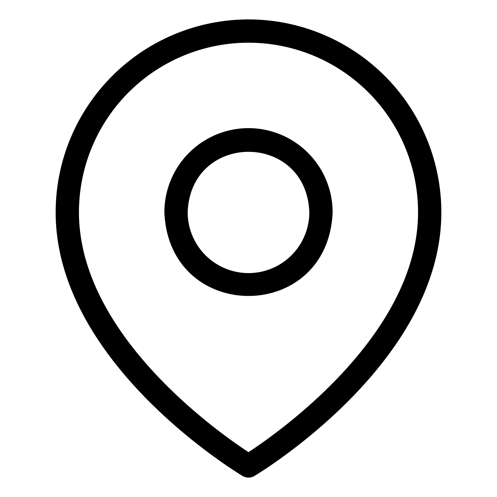

Contact Us
- Daniel Hansson, Director Musices
- Daniel.hansson@mau.se
- +46 40 665 71 45
- +46 70 676 01 00
-  Matrosgatan 1, 211 18 Malmö
Sixten Ehrling Digital Archive drivs av Sixten Ehrling Conducting Center, ett projekt av
Sixten Ehrling Digital Archive drivs av Sixten Ehrling Conducting Center, ett projekt av